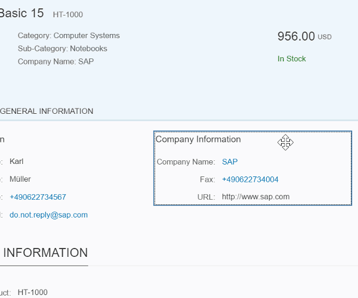
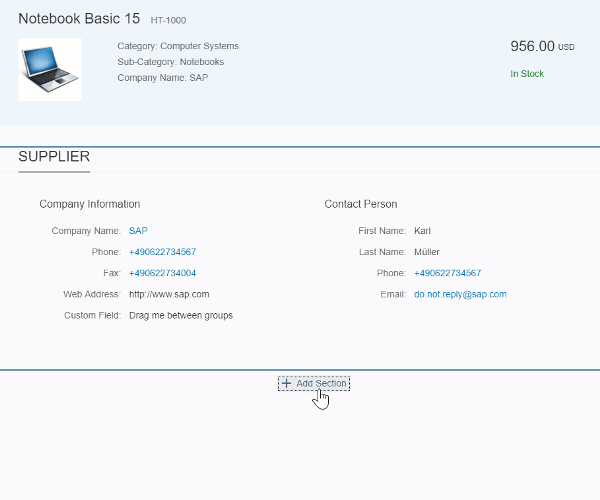
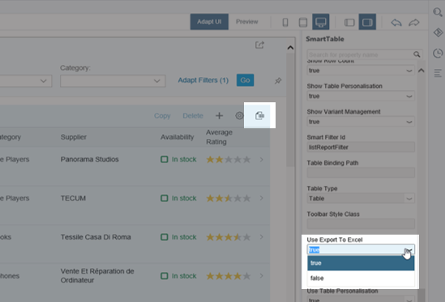

Modification-free, cost-saving, easy to use, and performant: Discover the new flexibility when adapting SAP Fiori UIs using SAPUI5 flexibility services.
|
Flexibility is key! Enterprise software must adapt to rapidly changing environments. For example, customers need their apps to fit their processes without long IT projects to adapt them, and cloud providers want to run the same software for everyone to reduce TCO. You think adapting the user interface of SAP Fiori apps (for example, by adding, hiding or rearranging fields) is a complex process? Think again! SAPUI5 flexibility services allow upgrade-safe and modification-free UI changes on different levels (for example, at customer side) that can be performed by different users (end users, key users, and developers). |
 |
Here are four reasons why you want to use SAPUI5 flexibility services:
It allows modification-free UI changes.
In contrast to extension points, UI changes made with SAPUI5 flexibility services are modification-free. This means better lifecycle stability over release cycles, as the original app stays untouched and the changes are applied to the views only at runtime. This is achieved by storing the changes by the different users in separate layers. For more information, see Layering Concept.
It saves time and money.
In the past, changing the UI was a complex, time and money consuming process. SAPUI5 flexibility services change all that! For example, with its UI adaptation at runtime feature, even users without technical knowledge can easily make UI changes themselves.
It's easy to use.
Using SAPUI5 flexibility services makes adapting the UIs of apps simple and intuitive, with WYSIWYG features and tools that are available right in the context the user is working in: end users personalize object pages of their apps and key users adapt apps for their teams directly in the SAP Fiori launchpad; developers can use a special editor in SAP Web IDE .
It's performant.
Last but not least: This flexibility doesn't come at the expense of performance! By caching the UI changes, SAPUI5 flexibility services guarantee smooth working with your adapted apps.
Hover over each quote for a brief description and click for more information.
They just start the personalization mode and use intuitive WYSIWYG functions to adapt the UI to meet their unique, day-to-day needs.
For the personalization feature to be available, in SAP Fiori launchpad on ABAP or on SAP Cloud Platform Portal on Neo Environment, the app needs to be assigned to one of the user's roles.
For more information, search for Enabling Personalization of Object Pages (Experimental) in the documentation for SAP Fiori launchpad in SAP NetWeaver AS for ABAP 7.52 with SAP_UI 752 in the SAP Fiori Launchpad overview page on the SAP Help Portal.

For more information about personalizing object pages in SAP Fiori apps using SAPUI5 flexibility services, search for Personalizing Apps in the documentation for SAP Fiori launchpad in SAP NetWeaver AS for ABAP 7.52 with SAP_UI 752 in the SAP Fiori Launchpad overview page on the SAP Help Portal.
Here's a typical scenario: A team lead who has business knowledge, but probably no technical or development skills, wants to adapt an app for all users of the app. In the context of SAPUI5 flexibility services, we call this team lead a key user. Let's assume, the users would need to see the supplier number in addition. Using the UI adaptation at runtime (RTA) feature of SAPUI5 flexibility services, the key user just starts the adaptation mode and changes the user interface using intuitive WYSIWYG functions. So, for example, it's very easy to rearrange UI elements using drag and drop or to add fields to the user interface. The supplier number would be added in no time. After releasing the adapted version of the app, it's available for all users working with the app.
For more information about adapting the user interface of SAP Fiori apps using the RTA feature of SAPUI5 flexibility services, search for Adapting SAP Fiori UIs at Runtime in the documentation for SAP Fiori launchpad in SAP NetWeaver AS for ABAP 7.52 with SAP_UI 752 in the SAP Fiori Launchpad overview page on the SAP Help Portal. If you use SAP Cloud Platform Portal, see Adapting the UI at Runtime in the SAP Cloud Platform Portal documentation.
Administrators have to enable key users for RTA. For more information, search for Enabling UI Adaptation at Runtime in the documentation for SAP Fiori launchpad in SAP NetWeaver AS for ABAP 7.52 with SAP_UI 752 in the SAP Fiori Launchpad overview page on the SAP Help Portal.
What has to be considered when developing apps that support RTA? In a nutshell: It's all about using the supported controls and stable IDs. For more information, see UI Adaptation at Runtime: Enable Your App. If you've developed your app based on SAP Fiori elements, you can make changes to the user interfaces using the intuitive UI Adaptation editor in SAP Web IDE, for example hiding the Export to Excel button.

For more information, see UI Adaptation Editor in the SAP Cloud Platform Web IDE guide.
Not all SAP Fiori apps support RTA. How to find out whether an app does? Either contact the developers of the app or check whether it uses the controls supported by RTA as well as stable IDs. To do so, access the diagnosis window and choose Control Tree. For more information, see Diagnostics.